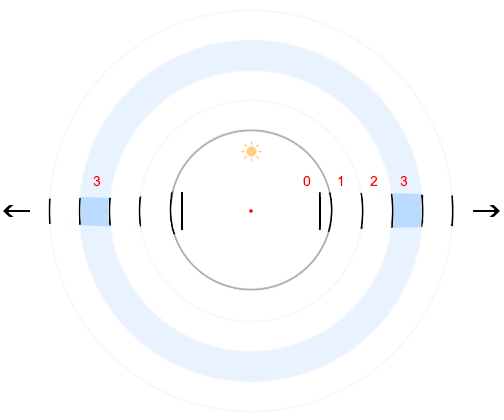
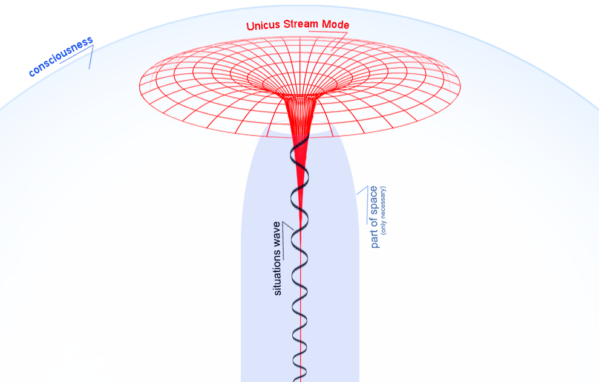

full contents of the book:
Nothing & Dot (Prolog)
Purpose
Contemplated
Entity
Consciousness
Two-Aspect (dualistic) Entity
Fourth dimension and ...
Society and Humanity
Fifth dimension and ...
Firstoccurence
Act of the “I”
The Proc.of study.the Act of "I"
The Meaning of Being
Development of Entity
The Collective Reality
the Entity Development System
Echo (Reflection)
Real Aspect of the Global I
About Worldview
Space-Time
Attitude toward Yourself
Attitude toward your body
Laziness
Fear
Hope (...for Miracle)
Adaptation
Identity of Personality
Relation [ Reason | Body ]
Free Will
Hard problem of Consciousness
Indistinguish and Identity
Matter
Gnoseology
Epistemology
Separation
to the home page
— Chapter Seventeen —
————————————————————————————
————————————————————————————
ECHO (REFLECTION)
Echo, or Reflection – We don't know enough about this. Perhaps this opinion can be changed in the course of research. We invite you to participate (time is not important). First, let's talk about pure reflection:
What is between the two mirrors? The representation is limited by the size and transparency of the glass. It resembles a figurative four-dimensionality, without any objects. If the objects were densely located in the original space, interrupting the line of reflection between the two mirrors, then this imitation(?) would be impossible. Each level of each reflection is a small part, albeit ‘ephemeral in the ephemeral’, but a separate infinite three-dimensional space (this is obvious);
Moreover, it is presented from both sides of the observer, that is, if, for example, you look at the third level from the observer, then in the mirror opposite this level will also be the third
Of course, we do not expect to make grand discoveries in the field of "mirror reflections" - it is known that several scientific centers around the world have been engaged in this. But, we will try to look at this phenomenon from the point of view of a 'simple layman', or a natural scientist at the layman level, and it is quite possible that this will help 'real researchers - figures of great science';
Observer between two mirrors (red dot in the center)

fig. 17
We are inside our level, and it is as if we are looking into some kind of ‘permissible corridor’, but in such a representation all levels appear to be outside – from our original one;
In the conditions of reality (some call these conditions the Material World) everything happens sequentially, therefore, it turns out that each subsequent remote level is, albeit with a small difference, but in the ‘more distant past’. If we are talking about reflection, then, having reflected from one surface, photons are reflected from another, then from the next. So this is logical, although not quite modern, because proving the sequential reflection of photons will be an extremely troublesome matter - it will most likely be confirmed that everything is simultaneous;;
Using mirrors as a visual model, to imagine the fourth dimension, and the ‘geometry’ of four-dimensionality, it will be a little easier for you, only there ‘inside and outside’. That is, being between the mirrors (in this exercise), imagine accordingly, it is not difficult to transform;;
We are used to perceiving Echo as something very simple and insignificant. By the way, here we use the concepts of "reflection" and "echo" in the same row - it is the same thing, but people are used to calling "Sound Reflection" - Echo, and "Light Echo" - Reflection. Here, we suggest using both concepts with the understanding of equivalence;;
Echo, Reflection - an omnidirectional flow of photons reflected from objects, and other particles (?). In the presence of objects, they are realized not only for the contemplative method of perception, but for any other, available to a person, or another 'being-participant-in-the-situation', including sound, X-ray, ultraviolet, infrared, etc., there are probably many unknown, we are not able to list them all, for an obvious reason, but for each type of particles, a corresponding method and mechanism of perception is needed (and for some, a certain environment, for example, a sound wave cannot propagate in a vacuum). Any methods, except for the most common ones inherent to humans, require the use of special equipment - otherwise perception will be impossible, and in some cases life-threatening;
* * *
Echo provides ‘realization of dynamics in processes’ in the conditions of the realization of Reality – allowing one to observe the shift relative to the current coordinates (objects);. Consequently, the Realization of Reality is impossible without these Conditions, and Reason reproduces the Echo (that is, the fact of Reflection) as a necessary <Fundamental> Condition of Contemplation;
* * *
We consider this as Reason reproduces it:
Due to the speed of photons, smooth dynamics are achieved and the quality of Situations corresponds to the highest qualification. Delays in the transmission and processing of signals in the ‘Reality Realization Mechanism’ are completely absent, but – they are significant when the Reason works;
The light flow emitted by the "Emitter", through any light source, reaches a certain coordinate point (the boundary of the object, whether it is a side or a facet, it does not matter), and changes direction, i.e.
We do not see photons, therefore we contemplate only objects relatively located in space. Or, in other words: We (people) call photons the data coming from “Consciousness” to “Reason”, through the realization of Reality in Space, and all this is components in the Unified Stream of Development of the Entity (this is very abstract :). Considering the ‘speed of light*’, the properties of particles and the mechanism of contemplation, the realization occurs instantly. The speed of this mechanism is due to the super-accessibility of “Consciousness”, which literally ‘Permeates the Whole World’, from one position:
1. Static; and from the other -
2. Simultaneously.
The obvious change in relativity between objects is realized
*the speed of light is relevant when Reality is meant, and ephemeral when we reason
let's talk about a static wave. First imagine its active reading. Photons seem to rush between objects -> assume a situation in a period lasting five minutes -> we consider this situation as if in a stretched (like a "pipe") space -> just fix it ! and imagine it as a single wave, including the parameters of space;
wave and stream

fig. 18
So, once again we draw attention to the fact that all this, in general, need be considered precisely as a flow, "a continuous flow of data + the process of realization", that is, active functions of the Reason and other mechanisms (mind etc). And if we say: "photon is reflected from an object" - this is essentially like a conductor from the object to the eye cell (a conductor that does not exist!) and all this is only - at the moment of contemplation (see fig. 18);
We naively thought like this: Space is not an empty volume – it is filled with photons and other particles – it is like filling with a heterogeneous liquid. In addition to ‘free particles’, space is filled with air, gases, and vapors of all (!) elements and compounds. If you think about it, it begins to seem that the procedural sequence has a reverse order, or does not have any at all, that is, you can understand that the object did not exist at the previous moment of time, but it is realized as a consequence, or more precisely “as a Consequence: of the data contained in the wave, when they are read simultaneously”. Processes arise, and precisely simultaneously, out of habit you want to say: 'occur’, 'are materialized :)’, but this is not so. Dynamics is only a phenomenon (fact, but just appearance);
* * *
Think about comparing this mechanism with a ‘software implementation’, or rather – our idea based on mathematics and knowledge of programming languages misleads us, and we begin to throw templates of experience onto the structure of a alive Entity, using terms from the IT sphere. But, of course, it’s the other way around – the structure of the Reason influences the invention of programming languages.
So, if we do not see the processes in the real, namely current and continuous dynamics, and all this is realized on the basis of static waves, through different states of objects, as we have previously considered, then everything we study is a common capacious wave, together with the movement of particles, which generally do not exist, but when interest is expressed, they are realized ‘as another basis’ and, like the dynamics of relativity, are only conditions, incidentally, not very complex (however, we have found out that complexity is not relevant for the Entity, as is time). Let us remind you once again that we do not consider the World as the fantastic “Matrix” in the film of the same name, and even on the contrary – what is revealed to us is qualified as: Absolute, Perfect, Eternal, Infinite, Ideal, and of course the Most Beautiful;
We will continue to consider this procedurally, it's acceptable for us, understandable and habitual. It is quite possible that if often and stubbornly imagine four- and five-dimensionality, carefully study the mechanisms of contemplation and the realization of reality, then over time the Reason will adapt and will think on such topics much effectively, and more adequately. We have observed this, on average it takes 2-3 years, if you study with special interest 3-5 times a week;
Very necessary to take into account that we receive only direct data, that is, the reflected photons carry the information of the last object that is realized, and do not contain data from previous reflections (... did they even be?). Therefore, we contemplate from one to three sides of the cube, and cannot see the fourth side, however, if the photon could be a carrier of data about the penultimate object with which it collided, we could see three-dimensionally, but this does not happen and cannot be, which is obvious. At the moment, flat <2d> images are contemplated, and three-dimensionality is only understood and imagined. Contemplation of fully three-dimensional objects would significantly simplify the understanding of the Structure of Four-Dimensionality, - due to the greater ‘logical potential of Reason’. With a special desire, this is already available, as is five-dimensionality;
* * *
When we look into water or into a mirror, there are no objects between us and the mirror, so we see only our face. The physics of reflection remains the same, but if you think about it, it explains in great detail the mechanisms and principles of the realization of objects in space. Now, let's turn on awareness, remember the mechanism of contemplation and the 'phenomenon of particle illumination', which is both a perfect prototype of 'software implementation' and a sensory mental process, i.e. simultaneously;
Reflection (Echo), functions as a transport of data within space, and as part of the mechanism of the realization of Reality, is not only a contemplative method, but a universal, mental, sound, sensory, and accessible through tangible (i.e. mechanical) vibration, that is, this principle represents a significant part of the fundamental basis for the realization of Reality, in all its aspects and manifestations, of all types of particles, that is, known and unknown to us, energies and relationships, including emotional, as well as mass socio-psychological. For example, the well-known Phenomenon with the Sincere Intention to “Give”* – will return Everything back, and many times over (like any Echo). By the way, we are literally ‘surrounded by specialists’ in this simple matter, who know how to choose the best angle for delivering conditional benefits to the masses (to ensure the necessary efficiency). It is clear why they do this (desire –> purpose –> business), and they succeed, but we know why it works;
*"Phenomenon with a sincere intention to Give" – provides the function of Reflection of Sincere Care back, towards the Source. The action produced due to "Care" – is directed towards the "Global aspect of the Entity". Falsification not work – sincerity not be faked;
- - -
If we exclude "Echo", block It at one moment, then at that very moment we will stop hearing sounds, as if astronauts
There are too many events (collisions and transmission of waves) and each sound cannot be perceived separately, since the propagation occurs in different directions - like the usual "crush in a cramped tram wagon", while the reflection from the wall seems to be more directed, or more coordinated, but it only seems so, since it occurs in the direction of the rarefied environ (air) - through which we hear sounds. But, in dense mass, the wave propagates faster. When talking, when we speak - we hear the reflection of sound not only from objects, but also from our own bones and flesh. The distances from all reflection points are different, the sound returns at different moments - therefore, all sounds are heard by us with the "effect of space", stretched out, having an extension. This is only the side of sound perception without taking into account the analysis and study of living low-frequency sources (not excluding ultrasound), beak clicking, vibration of vocal cords, stamping of hooves, flapping of wings, grinding of teeth. All these sounds are periodic, but each source (and sound) has its own frequency, emitted both outward, conditionally ‘from the generator’, and inward. At the inner boundary of the ‘emitter’
Echo, as a way of propagating and transmitting waves, is the principle of action of the “Instrument of Reality Awareness”, we assume that all of them, but we propose to check each method (not only the perception of sound and sight, i.e. contemplation), and find out more reliably, but let us not forget that all our experience, including current reasoning, is already an interpretation of the wave, and an explanation, “Reproduction of the Meaning of the content of a certain Essence in the wave” ... which is subjective in the World of each being;
It should be understood that "Data transfer is necessary for the realization of Reality, and is impossible without reflections occurring between particles, this is especially important". If this were ignored, would we have to be content with one-dimensionality? ... realize "being on a straight line"? But we understand perfectly well - these are impossible conditions;
This is not new :) at all, but it is worth ‘keep in mind’:
Vibration is transmitted in the same way as sound, but is perceived not through the ears, but through nerve cells (endings), the otolith and vestibular apparatus – special organs of perception that detect changes in acceleration and spatial position of the body. The bones of the skeleton play a significant role in the perception of sound and vibration. Sound and vibration spread throughout the body – due to this, the ‘Effect of immersion of the body in the Situation’ occurs;
Touch – touch perception of forms and surface structure, seems to be something special, but in principle it is an analysis of vibration of a certain nature, frequency transmitted when touching various objects, roughness and other irregularities, from smooth to shapeless or ribbed. Here it is appropriate to clarify that the perception of the temperature of environments and objects (“things”), as a characteristic – accompanies perception, however, is not the main one, when studying general possibilities;
The perception
read next chapter >> << back